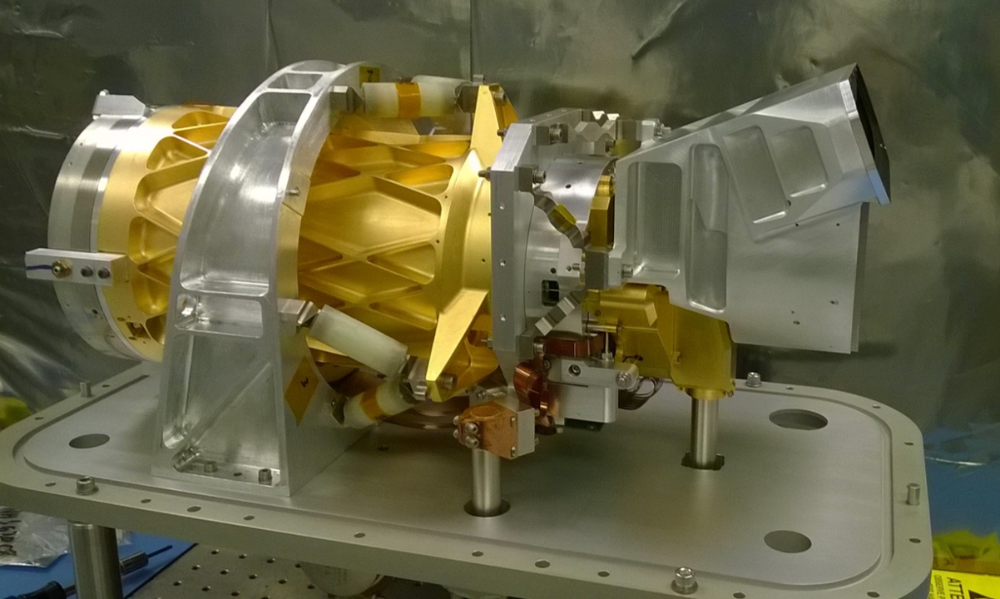
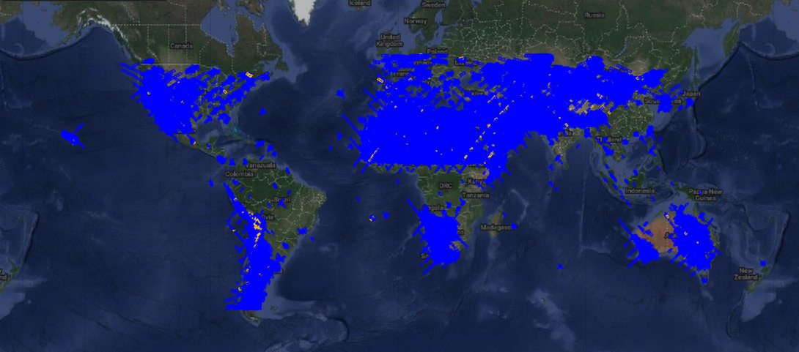
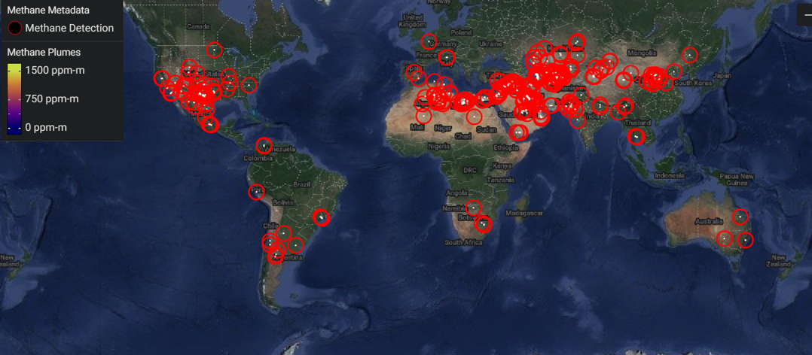

Use GreenHaus to explore climate-related data from NASA and other space agencies around the world, learn how to reduce your carbon footprint, find environment-related volunteer opportunities near you, and learn how to advocate for environmental change in your local area.
What is EMIT? NASA's Earth surface MIneral dust source invesTigation (EMIT) is a hyperspectral sensor mounted on the International Space Station (ISS), launched in July 2022. It scans Earth using visible and short-wave infrared light.
|  |
How is EMIT helping climate scientists? Mineral dust in the atmosphere, originating from global deserts and carried by winds, is a crucial element of the Earth's system. These dust particles, composed of dark and light minerals, have contrasting effects on Earth's temperature—dark minerals heat it up, while light ones cool it down. EMIT's precise mapping of dust-producing regions promises to deepen our understanding of how these particles impact the Earth system and human populations, both presently and in the future. The map below shows EMIT's scan coverage:
What else can EMIT do? It turns out that EMIT can help with more than dust sources! It's also really good at picking up sources of greenhouse gases, including carbon dioxide and methane. NASA has already made methane emission data from EMIT available (see the Data tab to learn more), and plans to do the same with carbon dioxide data soon! The map below shows EMIT's entire history of methane point sources.
Space agencies around the world collect and share data contributing to open science and improving our understanding of Earth's climate. Just a few examples include: